ECLIPSE
Volume 1 · Part 4 · The Things We Leave Behind
Prologue
The Call
Early evening · Wandile’s bedroom
Wandile sits at his desk with lecture notes, a half-finished assignment, and a laptop that has been open for two hours and productive for forty minutes.
For once, the screen shows nothing but coursework. No tabs, no timelines, no company names tied together with red thread. The research board by the window is still up, watching him like a very patient coworker, but tonight he has given himself one rule: Orion and Riverton can wait until tomorrow. They aren’t forgotten. They’re resting, like a dog that knows it will be taken for a walk later.
Above the desk, the old poster hangs where it always has: DISCIPLINE BUILDS FREEDOM. He stopped noticing it years ago.
His phone lights up. MOM CALLING.
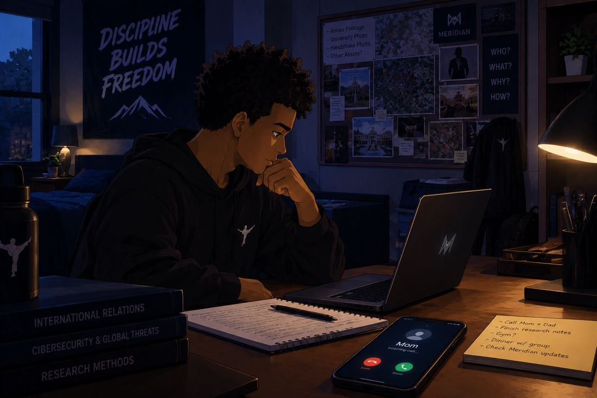
He answers.
“Hey, Mom.”
“Hi, sweetheart. Is this a good time?”
“Yeah. Just finishing some work.”
“How are classes going? Are you keeping up with everything?”
“They’re good. Busy, but manageable. One of my lecturers thinks every assignment is the most important assignment of the semester.”
“Perhaps they all think that.”
“Then they should organise a meeting and decide which one wins.”
His mother laughs. It’s a good sound. It makes the room feel less quiet.
“You sounded tired last time we spoke,” she says. “You told me you were fine.”
“I was fine. I am fine. Fine is a very flexible word.”
“Wandile.”
“It was a busy week, Mom. It’s quieter now. Honestly.”
That part is true, and it feels strange to say it. He has spent days looking over his shoulder, and tonight the loudest thing in his life is a lecturer with strong opinions about deadlines.
“And how are your friends? You still spending time with them?”
“Yeah. Ethan’s still talking enough for all four of us. Olivia and Charlotte are good too.”
“I’m glad you have people around you. You can’t spend all your time studying.”
“I don’t. I occasionally eat food that isn’t from a takeaway container.”
“I’ll believe that when I see it.”
Chapter 1
The Sports Question
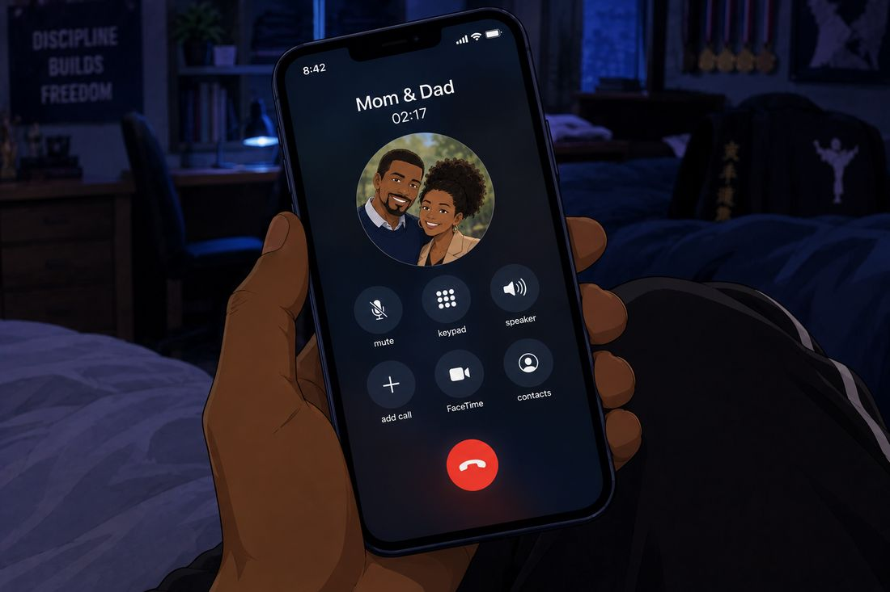
A second voice joins the line, deeper and warmer.
“How’s university treating you, son?”
“Pretty well, Dad. I’m getting settled.”
“Good. Are you doing any sports over there? Joining a team, training, anything like that?”
“Not really. I’ve been focused on classes.”
“Nothing at all?” his mother asks.
“Nothing at all.”
There is a small, familiar pause, the kind that only happens in families.
Behind Wandile, on the far wall, a row of medals catches the lamplight. He has been very carefully not looking at them.
“You were very good at martial arts when you were here,” his father says.
“Very good,” his mother adds. “You worked so hard for it. You should think about continuing.”
“You had excellent discipline. And you were good at reading your opponent. If you went back to it, I honestly think you could be one of the best.”
Reading your opponent. Wandile almost smiles. It’s the same skill he has been using on shell companies and financial records: spot the pattern before the strike. He had just never thought of it as the same thing.
He leans back, a little embarrassed.
“You two make it sound like I was about to enter a world championship.”
“We’re allowed to be proud of you,” his mother says.
“We’re not saying you have to compete,” his father adds. “Just don’t abandon something you loved because university got busy.”
Wandile looks down at his notes.
“Yeah. I’ll see how that goes.”
“That’s all we’re saying. Have a look at what’s available near you.”
“I will.”
Chapter 2
The Rest of the Call
The conversation drifts back to ordinary family business: a message his parents sent earlier, and one small practical thing he promised to check.
“I’ll check it after this,” Wandile says. “And tell Dad I did get the message.”
“I can hear you, you know,” his father says.
“Great. Saves me repeating myself.”
“We’ll let you get back to work,” his mother says. “Call us when you get a chance, not only when we call you.”
She says it lightly. It still lands.
“I will. Love you both.”
“Love you too, son. Take care of yourself.”
“Bye, sweetheart.”
“Bye, Mom. Bye, Dad.”
The call ends. Wandile sets the phone down, still wearing a small smile.
Chapter 3
The Wall
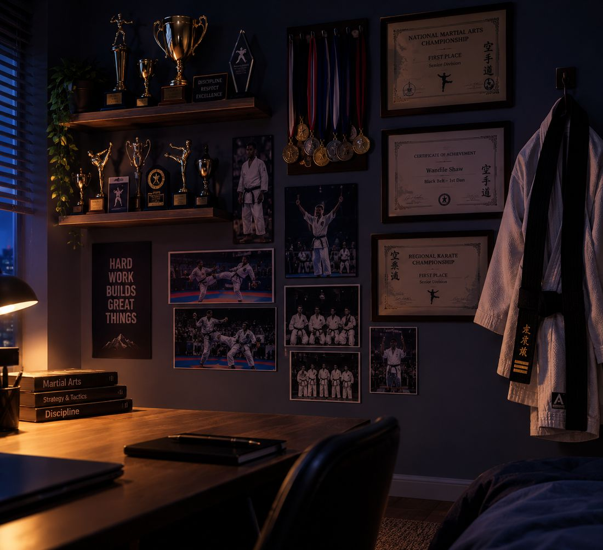
He turns to reach for a book, and his eyes land on the wall beside the wardrobe.
There is no avoiding it now.
Trophies. Medals. Certificates from tournaments and grading examinations. His martial arts uniform, hung neatly from a hook, folded at the sleeves the way he always used to fold it. None of it is decoration. Every piece is a reminder of years of early mornings and sore muscles.
Wandile stands and picks up one of the medals. His thumb brushes its edge. The ordinary sounds of the room soften, the light catches the metal, and the memory begins.
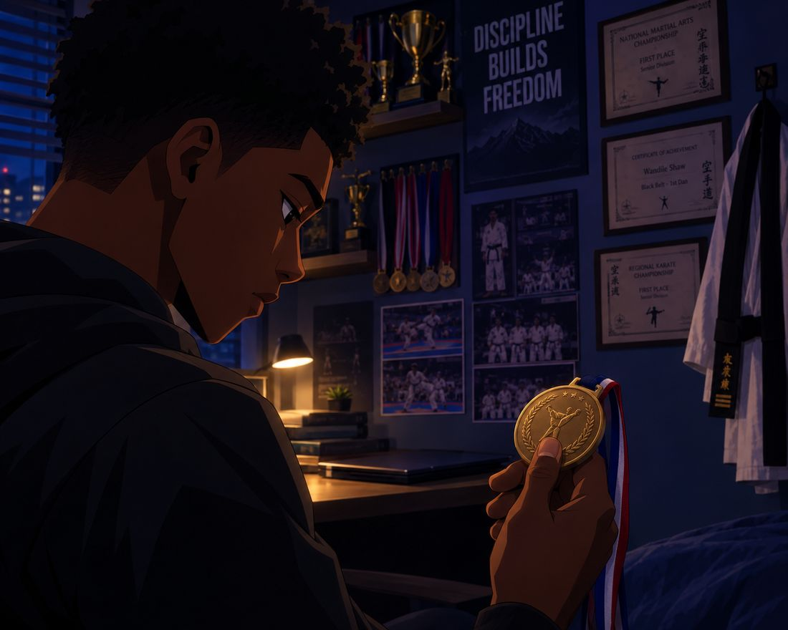
Chapter 4
The Mat
A younger Wandile, taller than he is wide, tries to copy a movement on the training mat. His footwork is a disaster. The mat wins the first round. It wins the second.
“Again,” his instructor says. “Don’t rush the movement. Understand it first.”
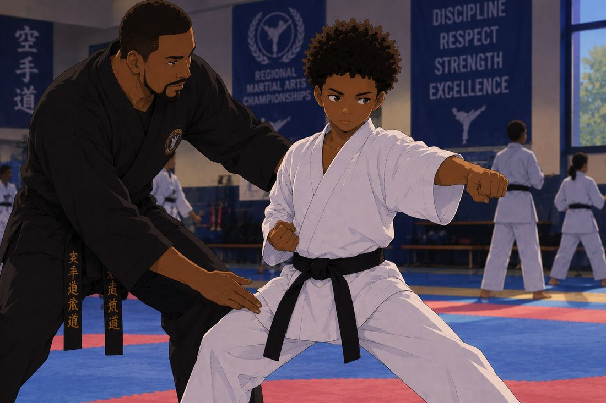
He repeats the technique, loses his balance, and resets without complaining.
A training partner advances. Wandile learns, slowly, to step aside and defend instead of meeting force with force.
“Watch the shoulders. Watch the feet. The movement starts before the strike.”
At a tournament, he is pressured and driven back. His heart is racing. He breathes, studies his opponent, and waits instead of panicking. Then he sees it: a gap, small and brief. He moves with careful timing and scores cleanly. The referee signals the point, and the crowd applauds.
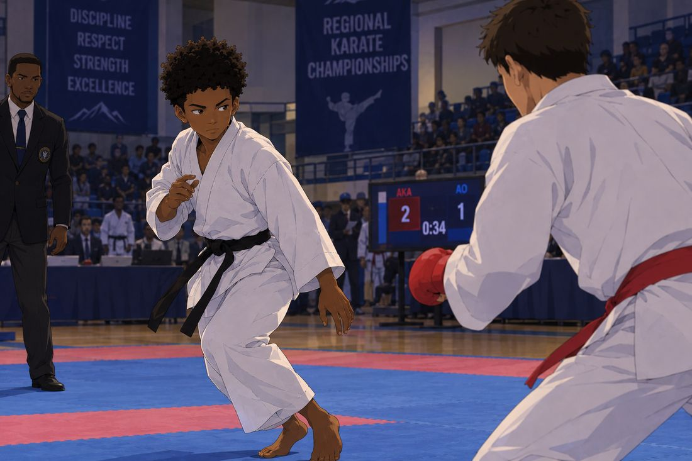
Another match. Wandile wins, then bows respectfully to his opponent.
Afterwards, his instructor presents him with a certificate while his parents watch proudly from the side of the room, his mother pretending she isn’t about to cry.
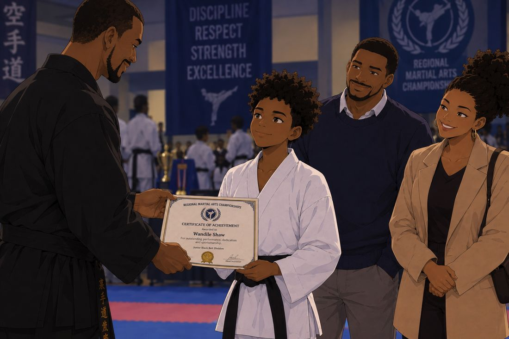
“Winning is one moment,” the instructor says. “Discipline is what you carry out of here. And knowing when not to fight matters just as much as knowing how.”
In the last memory, an older Wandile practises alone after everyone else has gone home. He repeats one technique again and again until it becomes smooth and controlled.
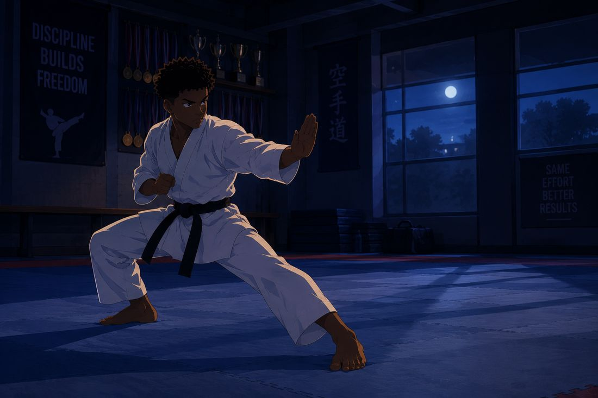
The memory fades on the sound of his breathing and the soft thud of his feet on the mat.
Chapter 5
Back in the Present
Wandile is still holding the medal.
Understand it first. He has heard that before, he realises, in his own handwriting, on a yellow sticky note. Facts are not the same as theories. The instructor and the sticky note are saying the same thing.
He looks from the medal to the uniform and the certificates. He steps toward the uniform and considers it. He does not take it down.
He thinks, briefly, about the night at the annex, about the camera turning toward him, and how his entire plan had been to walk away quickly. It worked. Luck is not a skill, though, and it will not always work.
His phone vibrates. A message from Ethan about meeting up on campus tomorrow. Wandile sends a short, casual reply.
He puts the medal back exactly where it was and returns to his desk. His coursework is still waiting, as patient and annoying as ever.
For a moment, he searches for martial arts clubs near Blackthorne University. He studies the results without choosing one.
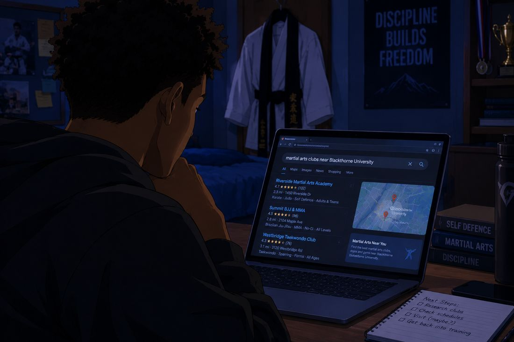
Then he closes the tab. Not because he has decided against it, but because he isn’t ready to decide tonight.
He returns to his assignment. The trophies stay visible in the corner of the room.
Chapter 6
Next Day
Blackthorne University
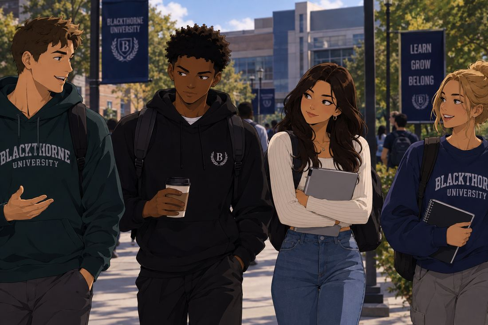
The next day, Wandile is just another full-time student walking between classes with Ethan, Olivia and Charlotte.
“I’m just saying,” Ethan announces, “if the professor wanted us to read that much, the book should come with a meal plan.”
“You would still complain about the meal plan,” Charlotte says.
“He’d write a review of it instead of doing the reading,” Olivia adds.
“That is called multitasking.”
Wandile laughs, a real laugh. Olivia notices and smiles at him a fraction longer than necessary before turning back to the conversation. It’s subtle. Nobody mentions it.
“You coming to the café after class?” she asks.
“If this assignment lets me go.”
“I’ll save you a seat. In case the assignment wins.”
“Very generous of you.”
It is an easy, ordinary exchange. None of them suspect anything about Wandile’s private life. For now, he is simply a student with good friends, and for the first time in a long while, that feels like enough.
Chapter 7
Evening
Wandile’s house
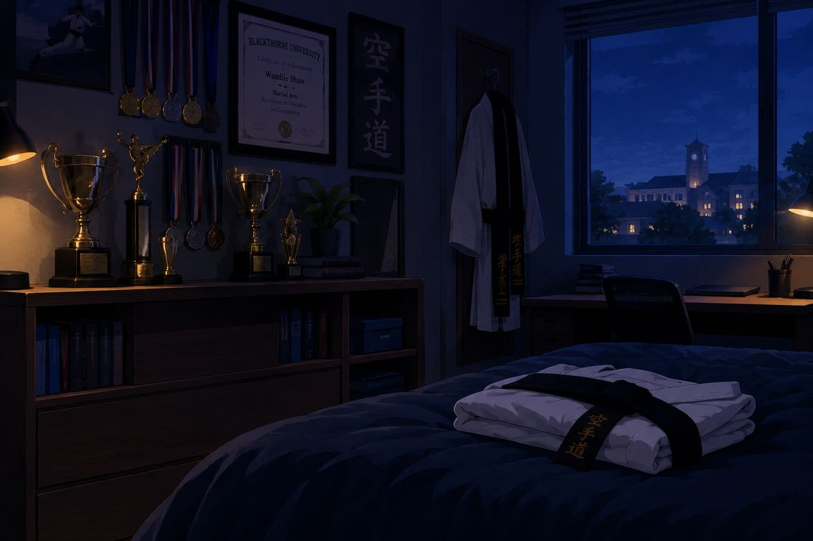
That evening, Wandile finishes his university work and tidies his desk. On his way past the wall, he stops again.
He hasn’t decided anything. He hasn’t signed up for a club, and he hasn’t taken the uniform off its hook. He is still a student with a past he may choose to return to.
The room is quiet. The medals catch the last of the light. Above the desk, the poster says what it always says: DISCIPLINE BUILDS FREEDOM. Tonight, for the first time in years, he reads it twice.
Some things you leave behind. Others just wait for you to come back.
Final Page
The Photograph
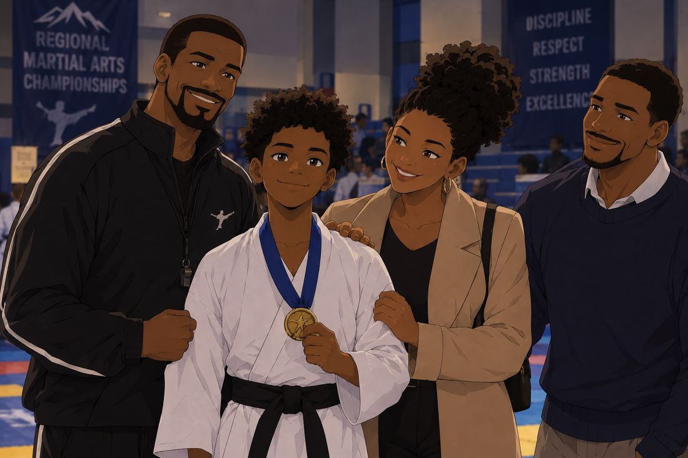
On the shelf lies a tournament certificate, the paper slightly curled at the corners. His gaze drifts along the medals and settles on a framed photograph: a younger Wandile standing proudly after a match, his instructor on one side, his parents on the other. All of them are smiling.
The room goes dark.
END OF PART 4